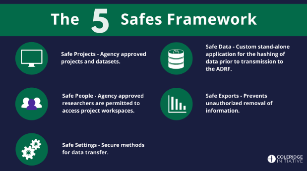

16 ADRF User Guide
A detailed guide to help users navigate and use the Coleridge Initiative’s Administrative Data Research Facility (ADRF) effectively.
Last Modified: 03/20/2025Last Updated:
17
Table of Contents
- Introduction
- Obtaining ADRF Access
- Onboarding Modules and Security Training
- How to Access and Use Your Project Workspace
- How to Access Data
- Where to Do Your Work
- How to Work Collaboratively in the ADRF
- How to Export Output from the ADRF
- Do’s and Don’ts for Discussing Data Hosted in the ADRF
- Adding Additional Packages in R/Python
- Redshift Querying Guide
- Accessing ADRF Dashboards
- FAQ
18
1 Introduction
Welcome to the Coleridge Initiative’s Administrative Data Research Facility, or “ADRF” user guide. This is a living document intended to show new ADRF users how to use the platform for common tasks.
About the Coleridge Initiative
The Coleridge Initiative’s mission is to improve the access, usability, and impact of data for public policy by fostering collaboration between government agencies, researchers, and other stakeholders. It aims to create a data ecosystem where government data can be more effectively used to inform evidence-based decision-making, policy development, and research.
About the Administrative Data Research Facility
The Administrative Data Research Facility (ADRF) is a platform provided by the Coleridge Initiative that enables researchers to access and analyze administrative data from government agencies securely and efficiently. It offers a secure computing environment where researchers can work with sensitive data while ensuring privacy and confidentiality. The ADRF provides tools and infrastructure for data integration, analysis, and visualization, allowing researchers to conduct rigorous and reproducible studies using large-scale administrative datasets. By facilitating access to valuable data resources and promoting collaboration between researchers, government agencies, and other stakeholders, the ADRF supports evidence-based policymaking and advances research in fields such as public health, education, labor economics, and social policy.
The Five Safes Security Framework
The ADRF follows the Five Safes Framework, a data management framework commonly used in government agencies, to ensure the safe use of sensitive and confidential data assets. It considers five dimensions in making data-related safety and security decisions: Safe Projects, Safe People, Safe Settings, Safe Data, and Safe Exports.

- Safe Projects - The ADRF contains only agency approved projects that have been proposed and agreed upon by project and dataset stewards. Only approved projects are housed within ADRF, only approved individuals are granted access to a given project, and project environments are kept separated from each other. These approved projects require signed agreements and only approved users can access the project workspaces within the platform.
- Safe People - Only approved researchers are permitted to access project workspaces and related resources. Each individual with approved access must complete security training, agree to the ADRF terms of use, and sign relevant data use agreements. Individuals must authenticate to gain access to the remote platform and all ADRF activity is monitored.
- Safe Settings - The ADRF is designed to provide secure methods of data transfer for agency micro-data, specifically data that includes Personally Identifiable Information. Only agency identified and authorized personnel are invited to perform data transfers.
- Safe Data - Before transmission to ADRF, all data with personally identifiable or other sensitive information is hashed, and an online data stewardship application provides data stewards with information on who is accessing their data, how it is being accessed, what projects employ it, the characteristics of each data asset, and the status of user agreements.
- Safe Exports - Users are prevented from unauthorized removal of any information within the secure environment.
19
2 Obtaining ADRF Access
Topics
Account Setup
- Agency-affiliated researcher. If you are an agency-affiliated researcher, your agency will set up an ADRF account for you.
- Individual part of a training program. If you are part of a training program, the Coleridge Initiative team will create an account for you once you have been accepted into the program.
Obtaining ADRF Access
- Agency-affiliated researcher. If you are an agency-affiliated researcher using an agency-sponsored account, you will be granted ADRF access once you complete your onboarding tasks and required data access agreements. If you are a self-paying agency-affiliated researcher, your ADRF access is conditional on receipt of payment. If your institution of Office of Sponsored Programs will be submitting payment on your behalf, please be aware of potential access delays. Whenever possible, the Coleridge Initiative advises paying with a personal credit card or institutional payment card and using the generated invoice to request reimbursement.
- Individual part of a training program. If you are part of a training program, you will be granted ADRF access once you complete your onboarding tasks and required data access agreements.
Account Registration and Onboarding Tasks
- You will receive an email invitation to activate your account. The email will come from http://okta.com, so please make sure that it doesn’t get caught in your email spam filter. Follow the steps outlined in the email to set up your password and your multi-factor authentication preferences. Clink on the link below to watch a video walking through the steps.
- After activating your account, you will be logged in to the ADRF Applications page. Proceed to the Management Portal by clicking on the icon.
- In the Management Portal, you will notice a “Onboarding Tasks” section within “Admin Tasks” with a number of items you will need to complete before you can gain access to the project space. Refer to the next section for details about the onboarding process.
More Information
If you have any questions, please contact support@coleridgeinitiative.org.
20
3 Onboarding Modules and Security Training
Topics
Management Portal
The Management Portal web-based application is positioned primarily as the management and monitoring console for project and data stewards. It provides detailed insight on project configurations, user activity, user onboarding status, and overall cost of a project on the ADRF. We focus on four primary pillars of information a Project/Data Steward most often focuses on: - People – Who are the members of projects, how often do they use the ADRF, what exports have they requested and their status, estimated cost per person/project for current month and for the project since inception, and detailed usage metrics. - Projects – Details of project start/end dates, abstract description, number of members onboarded and pending, and resources the project has access to (i.e. datasets, etc). - Datasets – Description of the dataset, location on the ADRF (database or file system), size, name of the data steward(s), and the link to Enterprise Data Catalog (Informatica) describing the dataset and metadata. - Agreements – What agreements are related to these projects, indication of each member’s signing status, members pending signature, and term (dates) covered by the agreement(s).
As mentioned, the Management Portal application will track your ADRF usage. The protal will also consolidate your ADRF Terms of Use, Security Training Quiz, and Security Training Video into one place. In order to complete ADRF onboarding, all three of the mentioned tasks are to be completed by the user (researcher). To access the Management Portal, log in using your credentials at https://adrf.okta.com and click on the ADRF Management Portal icon:


Accessing the Onboarding Tasks
To gain access to your ADRF project workspace, you must first complete 3 required ADRF onboarding tasks: 1. Signing the ADRF Terms of Use agreement. Users must comply with the Terms of Use when working in the ADRF. The Agreement covers rules of behavior within ADRF and guidelines for discussing ADRF content prior to passing disclosure review. It asks users to agree to a series of principles governing dataset use, behavior, and data export procedures, and to acknowledge the consequences of violating the Terms. 2. Completing security awareness training. Users will get access to a security awareness video and should confirm that they have reviewed the video. The video covers security content that is then assessed during the security awareness quiz. 3. Passing the security awareness quiz. The security awareness quiz consists of a set of 6 questions. Users must achieve a score 5 out of 6 to pass the quiz. Unsuccessful users can retake the quiz to achieve a passing score.
Follow the steps below to access the ADRF Onboarding Tasks: 1. Log in to the Management Portal
- Click on “Admin Tasks” in the left navigation menu.

- Click on “Complete Onboarding”.

- This will load the Onboarding Tasks window.

- Click on each individual task to complete it.
Signing the ADRF Terms of Use Agreement
The Terms of Use need to be completed before you are given access to the data and project space inside the ADRF. To complete ADRF Terms of Use, complete the following steps:
- Click on the “Terms of Use” tile.

- Click on “Sign with DocuSign”

- You will then be redirected to the DocuSign signing page. Click “Continue” on the upper right corner.

- Click “Start” to begin.

- If you have already configured a signature, click on the yellow “Sign” button to apply it. Otherwise, follow the prompts to configure your electronic signature.

- Once the signature is applied, click “Finish”.

You will then be redirected back to the management portal. And the “Terms of Use” task will be marked as completed.
Watching the Security Training Video
The Security Training Video needs to be completed as well. To complete the training, complete the following steps:
- Click on the “Security Training Video” tile to load the player and then click play.
- Once you have watched the video in its entirety, click on the “Mark as Complete” button to complete the task. Note: the “MARK AS COMPLETE” button will not be enabled until at least 5 minutes have passed since the start of the video.
- Click on the back arrow in the upper right corner to return to the main tasks panel.
- The training video section will now be marked as completed.
Complete the Security Training Quiz
The Security Training Quiz needs to be completed after the Security Training Video. To complete the training, complete the following steps:
- Click on the “Security Quiz” tile to load the quiz.

- Answer the questions and click on the “SUBMIT RESPONSE” button. You must answer at least four of the questions correctly to complete this task.

- You will be automatically redirected to the main task panel once the questionnaire has been successfully completed. And the “Security Quiz” will be marked as completed.

21
4 How to Access and Use Your Project Workspace
### Topics
A project workspace is a secure, isolated virtual environment in the ADRF within which an approved set of users can access a defined number of agency datasets. The project workspace is designed to allow approved researchers to access, analyze, and manipulate specific datasets relevant to their approved projects while maintaining strict data confidentiality and integrity.
Project workspace in the ADRF are isolated from each other. Even if a person is granted access to two project workspaces, the user can not access or copy files from one into the other. This is important because the two project workspaces might have access to different datasets.
Logging into and Logging out of the ADRF
This video linked below runs through the necessary steps for logging into and logging out of the ADRF.
To watch the video, right-click the image below and choose “Open link in new tab” (by right-cicking, you will avoid leaving this page).

Virtual Desktop Environment
What is a VDE?
A virtual desktop environment (VDE) allows you to interact with a remote system as if it were your own personal computer. The majority of your standard desktop functions are available, but the programs, data, and permissions are all controlled by the remote administrator (Coleridge Initiative). Thus, you will be working in a familiar environment while accessing protected data, programs, and systems that would otherwise be difficult to distribute. The ADRF uses a standard Windows environment (Windows Server) and provides a variety of software packages to conduct your analysis. For more on Windows capabilities, see the section on Windows Settings.

Temporary Nature of the Environment
While the environment is similar to that on your home computer (for Windows users), there are a handful of key differences. The first is that the environment is temporary in nature. This means that if you are not using it for a prolonged period of time (default is four hours but can vary by project), running programs will stop running and the information stored in temporary locations will be deleted. You will receive on on-screen message before any sessions are terminated. For more on safe, non-temporary storage locations in the ADRF, see the section on Storing Analytic Results.
Given the temporary nature of the ADRF, it is crucial to make sure that your work is saved—and saved in an appropriate location. Once this is complete and you are finished working, make sure that you log out of the ADRF instead of closing the window. To do this, click the rightmost icon on the top taskbar to open up the dropdown menu and select End Session. You will be prompted to double-check that your work is saved prior to ending your session and confirm that you want to end your session.
Modifying the Environment
Establishing Personal Folders
Establishing your own personal folders is one of the simplest, yet most important, steps to take when setting up your environment. As we note in the section on Storing Analytic Results, the two possible places to store your analytic results or files are in either the U: drive or the P: drive.
You will find your personal folder in the U: drive. The folder name will include your Firstname and Lastname, and may additionally include your project workspace number. This is a personal workspace that only you can access in the ADRF.
The U: Drive and the P: Drive
The U: drive is your user drive; it’s where you will store any files you are working on. Only the user will have access to the U: drive. For example, if user A wants to share information with user B who is on the same project, user A will need to save files to a P: drive folder and not folders in their U: drive since user B will not be able to access user A’s U: drive.
The P: drive is the project drive, which will be used to house project-specific folders. Thus, you and other collaborators on the same project will be able to save files to project drive folders.
Both the U: drive and P: drive have defined resource limitations of 150GB. When the workspace exceeds these limits, users will not be able to create new files or save data. The ADRF will not alert users when they approach on 150GB used. Users can check their current usage by right clicking on the user folder and clicking on properties.
Other Modifications
The top taskbar contains shortcuts to the command prompt, multiple desktop windows, a temporary folder, settings, full-screen view, and toggling multiple monitors.

Windows Settings
Your desktop will look familiar if you are a Windows user. You will have icons for quick access to programs or browsers on your desktop. The windows icon on the bottom left side of the screen will open up a menu of programs, folders, and other tools, much as you would see on your own desktop. You will have access to PowerShell and several customization settings (e.g., remove bottom taskbar).

Software in the ADRF
JupyterLab
JupyterLab provides flexible building blocks for interactive, exploratory computing. While JupyterLab has many features found in traditional integrated development environments (IDEs), it remains focused on interactive, exploratory computing. For more on JupyterLab, see the interface documentation.
The JupyterLab interface on the ADRF consists of a main work area containing tabs of documents and activities, a collapsible left sidebar, and a menu bar. The left sidebar contains a file browser, the list of running terminals and kernels, the table of contents, and the extension manager.

When using Jupyter Notebooks, make sure that all your work is saved to your U: drive and the correct director within the U: drive. You can “nd the active directory by reading the path displayed in the file browser. By default, JupyterLab opens with your U: drive as the base directory. Below, the folder icon in the white box is my user folder (not displayed, but titled Firstname.Lastname; you will have already set up your folder) and subfolder WDQI.

Notebooks
Jupyter Notebooks are documents that combine live runnable code with narrative text (Markdown), equations (LaTeX), images, interactive visualizations, and other rich output. You can create a notebook by clicking the blue + button in the file browser and then selecting a kernel (R, Python3, Stata) in the Launcher tab. For more information on getting started with Jupyter Notebooks, see JupyterLab Notebook documentation.
Accessing Stored Data from a Notebook
A common question is how to access stored data while writing to and using a Jupyter Notebook. Data in the ADRF are stored in a database using Microsoft SQL Server. For more information on how to access stored data in the ADRF based on choice of program (Python, R, Stata), see the section on Accessing Your Data.
Python 3
Python is a general-purpose programming language. You can access Python in a multitude of ways:
- Through JupyterLab. This is the recommended way to access Python since it has packages installed and available, and an execution environment for testing and running code (as well as a place to write and save code). Open JupyterLab and make sure your directory is set appropriately in the “le browser. Once there, in your new Launcher window, click the Python 3 icon.

- Through the start menu (windows icon). Type in Python. A desktop app called Python 3.7 (64-bit) will populate a window where you can begin programming.

- Through the command prompt in the top taskbar. Once the command prompt window is open, type in python.

- Through Pycharm

R
R is a general-purpose programming language. You may access R in one of three ways:
- Through RStudio. This is an integrated development environment (IDE) for R. You can run R code, display variables, debug R code, do inline visualizations, and more. Open RStudio through the desktop shortcut, or type RStudio in the start menu.
- Through JupyterLab. Open JupyterLab and make sure your directory is set appropriately in the file browser. Once there, in your new Launcher window, click the R icon.

- Through the R GUI (graphical user interface). Type R in the search bar and click to open the RGui.
Stata
Stata is a general-purpose statistical so#ware package. Stata can be accessed through the desktop shortcut StataMP 16 or by searching for it using the search or menu bar, or through JupyterLab.
DBeaver
DBeaver is a universal tool for querying, editing, and managing data stored in Redshift databases. The ADRF stores data using AWS Redshift Server. DBeaver can be accessed through the desktop shortcut DBeaver or by looking it up using the search bar.
Once open, you will need to connect to a Redshift server. Please follow the directions in the Redshift Querying Guide to connect to the appropriate server.
5 How to Access Data
This section provides information on how to locate the secure data you’ve been approved to access in the ADRF.
The ADRF offers both unstructured and structured data storage. Data stored in databases are located in the ADRF’s structured data storage. Other forms of data, such as flat files, CSVs, documentation, etc. are stored in the ADRF’s unstructured data storage. - Accessing data stored in unstructured data storage - Accessing data stored in structured data storage
External Data and Code: Please note that importing of external data and code is restricted to only Coleridge staff. Given the secure and protected environment provided by the ADRF, all code, data, and packages that are coming from outside of the ADRF must be carefully vetted to prevent leaks, disclosure, or unauthorized access. This means that there is no direct method for uploading data or code from your system to the ADRF. Please contact support@coleridgeinitiative.org for any questions or assistance on importing your own code, data, or packages.
Accessing data stored in unstructured data storage
Unstructured data, such as CSVs, Stata DTAs, SAS data, are stored in the “G” drive. Project teams will have read-only access to the data folders in this drive that they have been approved to access.
The G: Drive is located in the ADRF’s file system. You can find it by going to the Folder icon in the Windows Task Bar. 
Accessing data stored in structured data storage
Structured data, or data that are stored in relational databases, are stored in AWS Redshift, an MPP platform that is built on SQL and is specifically designed to handle larger data assets. Users access structured data either through DBeaver – the ADRF’s Database Access tool – or by porting directly to Redshift through their preferred statistical package (like R, or Python).
For detailed instructions on how to access data in structed data storage, please see the ADRF’s Redshift Querying Guide
22
6 Where to Do Your Work
The sensitive data that you have been approved to access will either be stored in the ADRF’s structured or unstructured stroage locations (see How to Access Data](#5-how-to-access-data)).
Eligible locations to do your work
You can perform your approved project work in one of the following locations in the ADRF: - User Drive - Project Drive - PR schema
User Drive
The U: drive is your user drive; it’s where you will store any files you are working on. Only the user will have access to the U: drive. For example, if user A wants to share information with user B who is on the same project, user A will need to save files to a P: drive folder and not folders in their U: drive since user B will not be able to access user A’s U: drive.
Project Drive
The P: drive also allows permanent storage. This drive is accessible by anyone on the same project, but not across projects. This is the only drive outside of the user drive where saved files will not be erased after logging out of the ADRF.
PR Schema
Each project will have a project-specific database created. All members of the project will have read and write permissions for data and may also create their own objects (tables, etc.). The project databases are prefixed with pr-.
Ineligible locations to do your work
The G: drive (data), the L: drive (Libs), and the desktop are not eligible for long-term file storing. You won’t have permissions to write to either the G: drive or the L: drive. The desktop will function only as temporary storage—as soon as a user is logged out of the ADRF, your desktop will be cleared. Additionally, since Wi-Fi connectivity can be imperfect, desktop storage for any amount of time is not recommended.
Storage Size Restrictions and Best Practices
Storage size varies by project, but is capped at a predetermined amount. Additional storage costs may vary depending on the resource requirements.
Best Practices: - To save storage space, avoid saving copies of raw data tables. Instead, write code to access data. For detailed instructions on how to access data in structed data storage, please see the ADRF’s Redshift Querying Guide - Organize folders in a way that makes sense for your particular project. For example, you might have folders for a particular analysis or sub-projects. Dates on file names can be helpful for version control. - Keep tabs on how much storage you are using compared to the allocated amount of storage.
23
7 How to Work Collaboratively in the ADRF
24
8 How to Export Output from the ADRF
To provide ADRF users with the ability to draw from sensitive data, results that are exported from the ADRF must meet rigorous standards meant to protect privacy and confidentiality. To ensure that those standards are met, the ADRF Export Review team reviews each request to ensure that it follows formal guidelines that are set by the respective agency providing the data in partnership with the Coleridge Initiative. Prior to moving data into the ADRF from the agency, the Export Review team suggests default guidelines to implement, based on standard statistical approaches in the U.S. government 1,2 as well as international standards 3, 4, and 5. The Data Steward from the agency supplying the data works with the team to amend these default rules in line with the agency’s requirements. If you are unsure about the review guidelines for the data you are using in the ADRF or if you have any questions relating to exports, please reach out to support@coleridgeinitiative.org before submitting an export request.
To learn more about limiting disclosure more generally, please refer to the Big Data and Social Science textbook or right-click here to view Coleridge’s Privacy and Confidentiality video series.
Note: The Export Requester cannot be assigned as a reviewer of the same export.
General Best Practices for a Successful Export
Note: Currently, the review process is highly manual: Reviewers will read your code and view your output files, which may be time-consuming.
- Each additional release adds disclosure risk and therefore limits subsequent releases; we ask that users limit the number of files they request to export to just the outputs necessary to produce a particular report or paper. If you are requesting an export of more than 10 files, there may be an additional charge.
- The reviewers may ask you to make changes to your code or output to meet the requirements of guidelines that have been given by the providers of the data in the ADRF. Thus, we strongly encourage you to produce all output files—tables with rounded numbers, graphs with titles, and so forth—through code, rather than manually.
- We ask that you only request review of final versions of output files, rather than in-progress versions. Any file containing intermediate output will be rejected.
- Every code file should have a header describing the contents of the file, including a summary of the data manipulation that takes place in the file (e.g., regression, table or figure creation, etc.).
- Documenting code by using comments throughout is helpful for disclosure reviews. The better the documentation, the faster the turnaround of export requests. If data files are aggregated, please provide documentation on the level of aggregation and for where in the code the aggregation takes place.
- To help reviewers, who may not have seen your code before, we ask that users create meaningful variable names. For instance, if you are calculating outflows, it is better to name the variable “outflows” than to name it “var1.”
Timelines for Export Process
- Coleridge reviewers have five business days to complete an export from the day you submit an export request. However, timelines may differ depending on your agency, so please refer to your specific agency’s guidelines.
- The review process can be delayed if the reviewer needs additional information or if the reviewer needs you to make changes to your code or output to meet the ADRF nondisclosure requirements.
Export Review Process
The ADRF Export Review process typically involves two main stages:
- Primary Review: This is an initial, cursory review of your documentation and exports to ensure they do not include micro-data. A primary review can take up to 5 business days, so please plan accordingly when submitting your materials. In cases where the reviewer has questions or requires additional information, the primary review may extend beyond 5 business days.
- Secondary Review: This is a comprehensive review conducted by an approved Data Steward who has content knowledge for the data permissioned to your workspace. If your submission pertains to multiple data assets, it will require approval by each Data Steward before the material can be exported from the ADRF. Please plan accordingly.
How to Check Your Export Review Status:
If you’ve submitted an export request, you can easily check the status of your submission by following these steps:
- Log into the ADRF.
- Open the ADRF Export module.
Review status descriptions
To help you better understand the different stages of the Export Review process, here are the status descriptions you may encounter: 1. Awaiting Reviewer: Your export is currently under primary review. If any issues arise during the primary review, your reviewer will notify you. Upon completion of the primary review, the secondary reviewer(s) will be notified. 2. Awaiting Secondary Review: Your export is currently under secondary review. If your submission pertains to multiple data assets, it will require a review by each Data Steward before being approved.
Preparing Data for Export
Each agency has specific disclosure review guidelines, especially with respect to the minimum allowable cell sizes for tables. Refer to these guidelines when preparing export requests. If you are unsure of what guidelines are in place for the dataset with which you are working in the ADRF, please reach out to support@coleridgeinitiative.org
Tables
- Cell Sizes:
- For individual-level data, please report the number of observations from each cell. For individual-level data, the default rule is to suppress cells with fewer than 10 observations, unless otherwise directed by the guidelines of the agency that provided the data.
- If your table includes row or column totals or is dependent on a preceding or subsequent table, reviewers will need to take into account complementary disclosure risks—that is, whether the tables’ totals, or the separate tables when read together, might disclose information about individuals in the data in a way that a single, simpler table would not. Reviewers will work with you by offering guidance on implementing any necessary complementary suppression techniques.
- Weighted Data: If weighted results are to be exported, you must report both weighted and unweighted counts.
- Ratios: If ratios are reported, please report the number of valid cases for both the numerator and the denominator (e.g., number of men in state X and number of women in state X, in addition to the ratio of women in state X).
- Percentiles: Do not report exact percentiles. Instead, for example, you may calculate a “fuzzy median,” by averaging the true 45th and 55th percentiles.
- Percentages: For any reported percentages or proportions, the underlying counts of individuals contributing to the numerators and denominators must be provided for each statistic in the desired export.
- Maxima and Minima:
- Suppress maximum and minimum values in general.
- You may replace an exact maximum or minimum with a top-coded value.
Graphs
- Graphs are representations of tables. Thus, for each graph (which may have, e.g., a jpg, pdf, png, or tif extension), provide the source data of the underlying table of the graph following the guidelines for tables above.
- Because graphs and other figures take the most time to review, the number of generated graphs should be as low as possible. Please consider the possibility that you could export the underlying table instead, and generate the graph in another package.
- If a graph is produced from aggregated data or from tables that have been disclosure-proofed following the guidelines above (e.g., bar charts of magnitudes), provide the underlying tables.
- If a graph is produced directly from unit-record data but aggregated in the visualization (e.g., frequency histograms), provide the underlying tables.
- If a graph is produced directly from unit-record data and displays unit-record values (e.g., scatterplots, plots of residuals), the graph can be released only after you ensure that individuals cannot be re-identified and that values can only be estimated with a high level of uncertainty. Further processing to meet this requirement can include, but is not restricted to, cutting off the tails of a distribution, removing outliers, jittering the actual values, and removing or modifying axis values.
- If a graph is produced from the results of modeling or derivation and uses the unit-record data (e.g., regression curves), the graph can be released only if the values cannot be used to find original data values.
- Graphs of this type are generally automatically cleared.
- For precision/recall graphs, you will need to report the sample size used to generate your model(s).
Model Output
Output from regression or machine-learning models generally does not pose a risk of disclosing personally identifiable information, as long as the models are not based on small samples. Provide the counts for each variable that produces the model output. If categorical variables are used then provide the counts for each category.
Submitting an Export Request
To request an export be reviewed, please follow the instructions below or you can watch an instructional video by right-clicking this link.
- Log into the ADRF (http://adrf.okta.com).
- Input your login credentials.
- Verify yourself with Okta (download Okta Verify on your smartphone or other device).
- Choose your project as seen in the photo below. For the purpose of this document, you are seeing the Coleridge Initiative Associate Access project.

- Select Desktop and login with the same credentials you had done previously.
- Upon entering the ADRF, a Google Chrome page will appear as shown in the photo below (the Getting Started page). On this page, click on the Export Request tile. Or, from the ADRF desktop, open Google Chrome and navigate to export.adrf.net. (Note: export.adrf.net is an address that will only work within the ADRF desktop).

- Click My Requests, or the top (person-shaped) icon, at the left side of the window as shown in the screenshot below.

- Click New Item as shown below

- You will be asked to select the project to which your export relates. If you do not see the correct project listed in the dropdown list, please reach out to our support team at support@coleridgeinitiative.org.
- After selecting a project, click Continue.

- Read through the entire page that loads. This page, titled “Create Export Request,” will ask for you to comment on all supporting code files to explain the commands used to generate the files in the export request. The Export Review team will reject all requests containing intermediate output. The Export Review team will typically release export requests within five business days. However, if the team has any clarifying questions, this could result in a longer review process. You need to document your output files in the text box provided. See the example below:

- When you have read through and followed the page instructions, and are ready to proceed:
- Move the slider at the bottom of the page to indicate that you have followed the page’s guidelines.
- At the bottom of the page, upload each of the files that you have prepared.
- Click Submit Request… to create the export request.

- You can click My Requests at the left side of the window to view your current and previous export requests.
Note: To learn more about exporting results, you can watch an instructional video by right-clicking this link.
25
9 Do’s and Don’ts for Discussing Data Hosted in the ADRF
You must protect the confidential data that is hosted inside the ADRF in communicating with your teammates. The general rule is that you should never take any exact number out of the ADRF. This means you should never write down or share any number by text, screenshot, or share an image even with a team-mate. The rules have become more complicated now that everything is online, because even though your teammates are “safe people”, and Zoom conversations are password protected and encrypted, we’d rather err on the side of caution when sharing information over Zoom.
To ensure safe outputs, the Coleridge Initiative works with an agency’s Data Steward to develop rigorous export review requirements catered to the specific needs of the partner agency. While you should make sure to acquaint yourself with the specific export rules associated with the confidential data you have been approved to access, cheat sheet provided below summarizes some of the rules that apply to discussing data before it has been exported from the ADRF and passed the ADRF team’s disclosure review.
If you are unsure about a specific situation, please ask reach out to the Coleridge Support Team at support@coleridgeinitiative.org.
Exact Numbers
Do not describe a statistic in exact numbers. If you would like to communicate these values while not in person, you can have a private discussion via the projects drive inside the ADRF.
Example: If an average within a specific group was 5,000, you would need to convey this average on the projects drive.
Comparing Values
When comparing values, you are permitted to say that one value is more than, less than, or about the same as another. However, you cannot refer to the exact difference between the two numbers.
In practice, you can use pluses and minuses to convey differences between values for data that has not been exported from the ADRF.
Example: “The mean for Group A was roughly the same as the mean for Group B, but these values were both greater than that of Group C.”
Percentages/Proportions
Percentages and proportions also cannot be directly mentioned. Instead, you can refer to the percentage/proportion within 25%.
Example: If a proportion was 30%, you could say “The proportion is about 25%” or “The proportion is between 25% and 50%.”
26
10 Adding Additional Packages in R/Python
The ADRF has an internal package repository, so users can install packages for R and Python themselves.
The repositories that are currently mirrored in the ADRF are CRAN for R packages and PyPi.org for Python. There is currently no access to packages hosted on Github or other mirrors.
Note: If you are working in a shared workspace for a project, each user in the project must install the packages, there is no shared package installation for projects.
Add additional R packages
To install R packages, simply use the code below and the package will be installed from the repository. You will not have to re-install the package again, and to use the package load it with the library() function. For example:
install.packages("packagename")** Example**: Installing tidyverse 
To install a specific package version you can specify:
install.packages("remotes")
remotes::install_version("tidyverse", "1.3.2")Note: We recommend starting R using Rstudio for best results, instead of double clicking on a R or Rmarkdown script.
Add additional Python packages
Similar to R packages, Python packages may be installed using the Package Installer for Python (pip).
Note: We recommend installing python packages from the command line. If you start Jupyter lab, and choose the Terminal tab:

Then install your package using pip, for example, to install the pandas package:

Then you may use the package within your Jupyter notebook as usual.
To install a specific package version type:
pip install pandas==1.2.327
11 Redshift Querying Guide
This document serves as an introduction to generating proficient Amazon Redshift queries. This is a generalized document meaning you will need to replace “schema_name” and “table_name” with the appropriate schema and table names used for your project.
Note: All data is stored under schemas in the projects database.
Topics
- Data Access
- Using DBeaver to access a database
- Connecting to a database through a statistical program using an ODBC connection
- Connecting to a database using SAS
- Connecting to a database using R
- Connecting to a database using Python
- Connecting to a database using Stata ### Data access If you are approved to access data that are stored in a database, the data are housed in Redshift. To access those data, you will have to log in to Redshift within your workspace.
You need to replace the “user.name.project” with your project workspace username. The project workspace username is your user folder name in the U:/ drive:

Note: You will need to enter your specific user name when logging into Redshift. The password needed to access Redshift is the second password entered when logging into the ADRF as shown in the screen below: 
Using DBeaver to access a database
To establish a connection to Redshift in DBeaver, first open DBeaver by clicking on the DBeaver icon located on the ADRF desktop and then double click on the server you wish to connect to. Note: All data is stored under schemas in the projects database.
In the example below, we will connect to Redshift11_projects. After double clicking on Reshift11_projects, a window will appear asking for your Username and Password. - In Username, enter “adrf\” followed by your project workspace username - In Password, enter the password associated with your project workspace username 
After completing the Username and Password fields, click OK. You will now have access to your data stored on the Redshift11_projects server.
Note: Please make sure to enter “adrf\” before your project workspace username in the Username field. If you do not enter “adrf", or accidently include a”/” instead of a “\”, you will not be able to connect to Redshift. If you are having trouble connecting, an incorrect entry in Username is most likely the culprit.
Creating tables in a PR or TR schema in Dbeaver
When users create tables in their PR (Research Project) or TR (Training Project) schema, the table is initially permissioned to the user only. This is analogous to creating a document or file in your U drive: Only you have access to the newly created table.
If you want to allow all individuals in your project workspace to access the table in the PR/TR schema, you will need to grant permission to the table to the rest of the users who have access to the PR or TR schema.
You can do this by running the following code: GRANT SELECT, UPDATE, DELETE, INSERT ON TABLE schema_name.table_name TO group db_xxxxxx_rw;
Note: Note: In the above code example replace schma_name with the pr_ or tr_ schema assigned to your workspace and replace table_name with the name of the table on which you want to grant access. Also, in the group name db_xxxxxx_rw, replace xxxxxx with your project code. This is the last 6 characters in your project based user name. This will start with either a T or a P.
If you want to allow only a single user on your project to access the table, you will need to grant permission to that user. You can do this by running the following code:
GRANT SELECT, UPDATE, DELETE, INSERT ON TABLE schema_name.table_name to "IAM:first_name.last_name.project_code";
Note: In the above code example replace schma_name with the pr_ or tr_ schema assigned to your workspace and replace table_name with the name of the table on which you want to grant access. Also, in "IAM:first_name.last_name.project_code" update first_name.last_name.project_code with the user name to whom you want to grant access to.
If you have any questions, please reach out to us at support@coleridgeinitiative.org
Connecting to a database through a statistical program using an ODBC connection
When connecting to the database using an ODBC connection, you need to use one of the following DSNs:
Redshift01_projects_DSNRedshift11_projects_DSN
In the code examples below, the default DSN is Redshift01_projects_DSN.
Topics: - Connecting to a database using SAS - Connecting to a database using R - Connecting to a database using Python - Connecting to a database using Stata
Connecting to a database using SAS
Use the following code to connect to a databse using SAS:
proc sql;
connect to odbc as my con
(datasrc=Redshift01_projects_DSN user=adrf\user.name.project password=password);
select * from connection to mycon
(select * form projects.schema.table);
disconnect from mycon;
quit;Connecting to a database using R
- Recommended method for connecting to a database using R
- Using Renviron file to connect to a database using R
- Best practices for loading large amounts of data in R
Recommended method for connecting to a database using R
Note: To use this method, you may need to install the packages RJDBC and rstudioapi first.
library(RJDBC)
# Create username
dbusr=paste("ADRF\\", Sys.getenv("USERNAME"), sep= '')
# Database URL
url <- paste0("jdbc:redshift:iam://adrf-redshift01.cdy8ch2udktk.us-gov-west-1.redshift.amazonaws.com:5439/projects;",
"loginToRp=urn:amazon:webservices:govcloud;",
"ssl=true;",
"AutoCreate=true;",
"idp_host=adfs.adrf.net;",
"idp_port=443;",
"ssl_insecure=true;",
"plugin_name=com.amazon.redshift.plugin.AdfsCredentialsProvider")
# Redshift JDBC Driver Setting
driver <- JDBC("com.amazon.redshift.jdbc42.Driver",
classPath = "C:\\drivers\\redshift_withsdk\\redshift-jdbc42-2.1.0.12\\redshift-jdbc42-2.1.0.12.jar",
identifier.quote="`")
con <- dbConnect(driver, url, dbusr, rstudioapi::askForPassword())Using Renviron file to connect to a database using R
library(RJDBC)
dbusr=Sys.getenv("DBUSER") dbpswd=Sys.getenv("DBPASSWD")
# Database URL
url <- paste0("jdbc:redshift:iam://adrf-redshift01.cdy8ch2udktk.us-gov-west-1.redshift.amazonaws.com:5439/projects;",
"loginToRp=urn:amazon:webservices:govcloud;",
"ssl=true;",
"AutoCreate=true;",
"idp_host=adfs.adrf.net;",
"idp_port=443;",
"ssl_insecure=true;",
"plugin_name=com.amazon.redshift.plugin.AdfsCredentialsProvider")
# Redshift JDBC Driver Setting
driver <- JDBC("com.amazon.redshift.jdbc42.Driver",
classPath = "C:\\drivers\\redshift_withsdk\\redshift-jdbc42-2.1.0.12\\redshift-jdbc42-2.1.0.12.jar",
identifier.quote="`")
conn <- dbConnect(driver, url, dbusr, dbpswd)Note: For the above code to work, please create a file name .Renviron in your user folder (user folder is something like i.e. u:\John.doe.p00002) And .Renviron file should contain the following:
DBUSER='adrf\John.doe.p00002'
DBPASSWD='xxxxxxxxxxxx'_PLEASE replace user id and password with your project workspace specific user id and password.
This will ensure you don’t have your id and password in R code and then you can easily share your R code with others without sharing your ID and password._
Best practices for loading large amounts of data in R
SQL Basics with R Programming
To ensure R can efficiently manage large amounts of data, please add the following lines of code to your R script before any packages are loaded:
options(java.parameters = c("-XX:+UseConcMarkSweepGC", "-Xmx8192m"))
gc()Best practices for writing tables to Redshift
When writing an R data frame to Redshift use the following code as an example:
# Note: replace the table_name with the name of the data frame you wish to write to Redshift
DBI::dbWriteTable(conn = conn, #name of the connection
name = "schema_name.table_name", #name of table to save df to
value = df_name, #name of df to write to Redshift
overwrite = TRUE) #if you want to overwrite a current table, otherwise FALSE
qry <- "GRANT SELECT ON TABLE schema.table_name TO group <group_name>;"
dbSendUpdate(conn,qry)Connecting to a database using Python
import pyodbc
import pandas as pd
cnxn = pyodbc.connect('DSN=Redshift01_projects_DSN; UID=adrf\user.name.project; PWD=password')
df = pd.read_sql("SELECT * FROM projects.schema_name.table_name", cnxn)Connecting to a database using Stata
odbc load, exec("select * from PATH_TO_TABLE") clear dsn("Redshift11_projects_DSN") user("adrf\user.name.project") password("password")28
12 Accessing ADRF Dashboards
Some users will be approved to access an ADRF Dashboard. This section provides step-by-step instructions for accessing ADRF Dashboards.
Note: If you are a first-time ADRF Users, please follow the instructions in the Onboarding Modules and Security Training to activate your ADRF account and complete your onboarding tasks.
Step 1: Setting your dashboard access password
Once you have completed the management portal onboarding tasks, you will next need to set your dashboard access password. This is separate from the first password you use to access the ADRF through Okta, and will instead be used to provide specific access to the dashboard. You should only need to do this the first time you access the dashboard, but you can always follow these instructions if you need to update or reset your dashboard access password in the future.
- In the Management Portal, again navigate to the “Admin Tasks” page by clicking the link on the sidebar navigation menu:

- Click on the “Reset Password” button:

- This will load the password reset window:

- Select the account associated with the dashboard by clicking on the checkbox on the right:

Important: Take note of the username associated with your dashboard (John.Doe.P00000 in this example). You will need to enter this username again in the next step. This is also the user name referenced in your onboarding email.
- Enter the desired password. The chosen password must adhere to the ADRF password policy:

- Click the “Reset Password” button to proceed with the update. You will receive confirmation at the bottom of the window once the password has been successfully updated:

Step 2: Accessing the Dashboard
Once you have successfully reset your dashboard access password, you are ready to access the dashboard. To do so, navigate back to the main Okta portal (adrf.okta.com) and click on the tile associated with your dashboard. This tile will be unavailable until you complete the three ADRF onboarding tasks discussed in Onboarding Modules and Security Training:

Clicking on this will bring up another window where you will be prompted to “Choose Your Application to Get Started.” Click on your Dashboard icon:

Next, you will need to wait for your session to be prepared. Then, your session will load the secure browser window, which will then bring up the Posit Connect portal. The Posit Connect portal is used to host the Dashboard. This step may take several seconds while the browser loads and prepares the dashboard data.
Before accessing the dashboard, you will then be presented with one final request to log into the secure Connect environment.:

Here, please enter:
- The username you saw in the Password Reset step above (e.g., John.Doe.P00000)
- Your dashboard access password that you set in Step 2.

Once you enter the appropriate information and click “Log In,” your dashboard should begin to load. This again may take a minute or two - if you run into any issues, please reach out to us at support@coleridgeinitiative.org.
29
13 Frequently Asked Questions (FAQ)
Topics
How do I set up my Multifactor Authentication
You should be prompted to set up multifactor authentication when you create your account, the options are SMS, voice call, email and the Okta verify application.
Can I set up more than one form of Multifactor Authentication?
This is recommended. If you lose access to one form of MFA, you would still be able to gain access to your account using an alternative. To do so, please log on to https://adrf.okta.com and select your name on the top right and click settings. Here you can modify or set up your SMS, voice call, email or Okta multifactor authentication.
How can I reset my Okta password?
You can use the “Need help signing in?” option on the sign on page (https://adrf.okta.com) which will send a link to your email to reset your password. You may have to verify your identify by answering security questions which you set up when creating your account.
How can I reset my ADRF password?
You can reset your ADRF project password by following these steps:
- Click on the ADRF Management Portal Okta Tile:

- Then click on Admin Tasks on the left hand side of the screen:
- Then click on RESET PASSWORD:

You’ll see a screen where you can choose the project(s) for which you want to update the password.
30
References
Confidential Information Protection and Statistical Efficiency Act of 2002. (Washington, DC: U.S. GPO, 2002).↩︎
Federal Committee on Statistical Methodology. “Report on Statistical Disclosure Limitation Methodology,” 22 (Second Version, 2005). https://nces.ed.gov/fcsm/pdf/spwp22.pdf.↩︎
“How to Use Microdata Properly: Self-Study Material for the Users of Eurostat Microdata Sets.” (2018). https://ec.europa.eu/eurostat/web/microdata/overview/self-study-material-for-microdata-users.↩︎
Research Data Centre of the German Federal Employment Agency at the Institute for Employment Research. “Remote Data Access and On-Site Use at the FDZ of the BA at the IAB.” (2020, December 8). http://doku.iab.de/fdz/access/Vorgaben_DAFE_EN.PDF.↩︎
Welpton, Richard. Handbook on Statistical Disclosure Control for Outputs. (figshare, 2019). https://doi.org/10.6084/m9.figshare.9958520.v1.↩︎